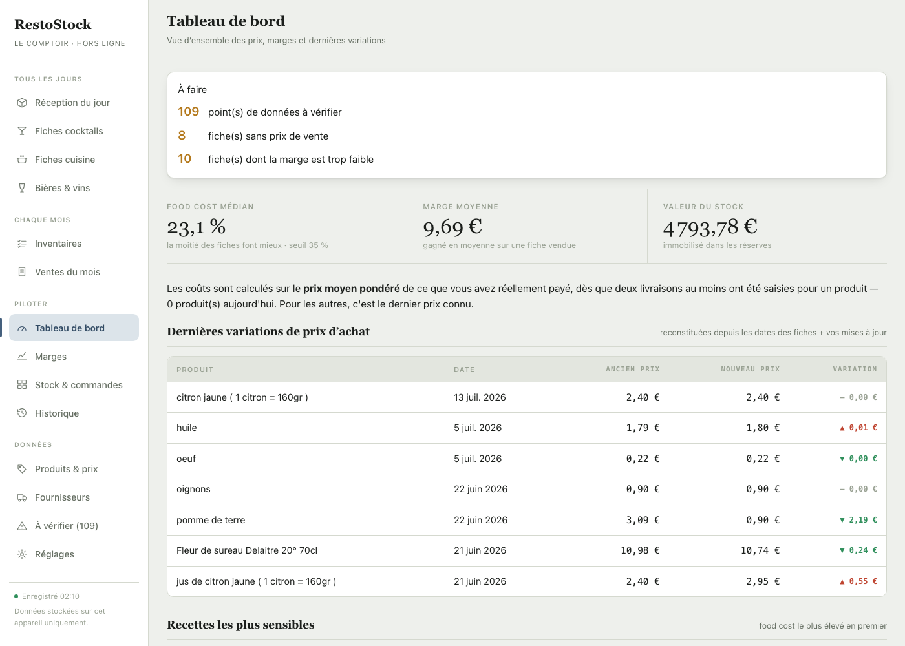
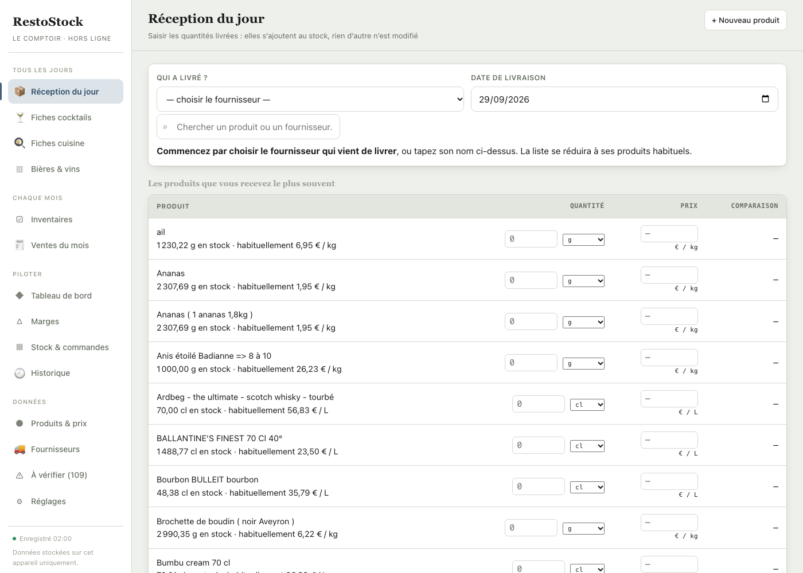
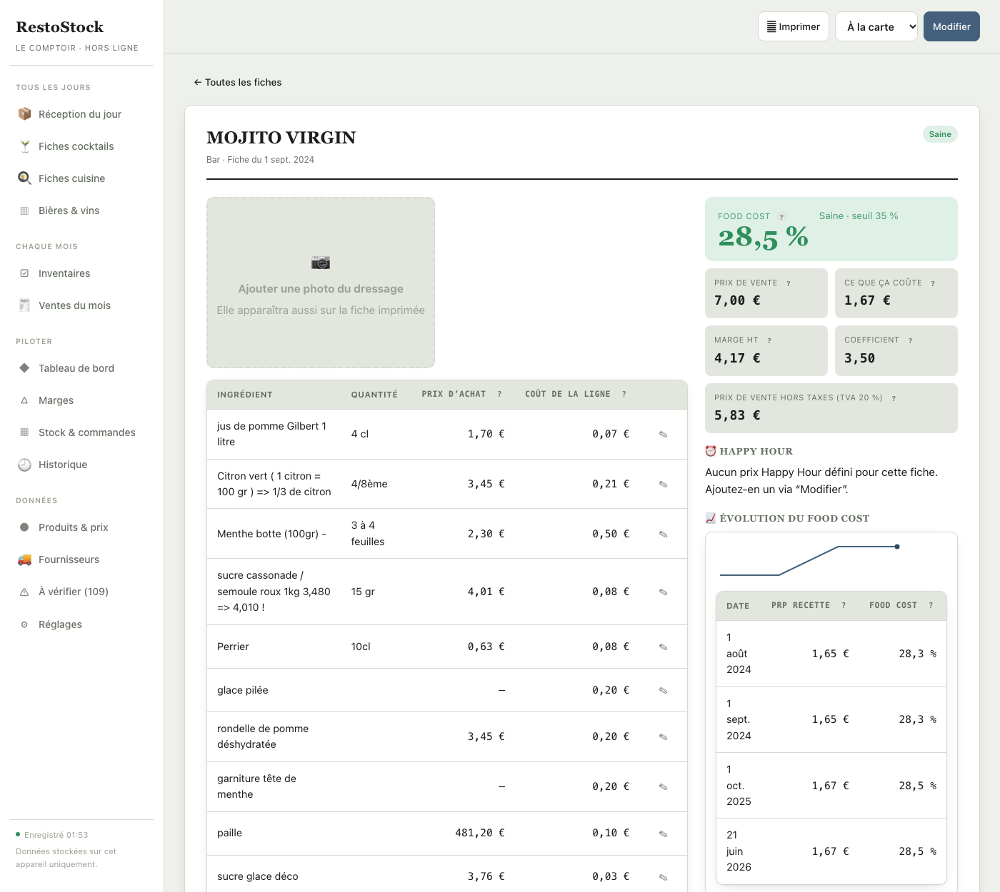
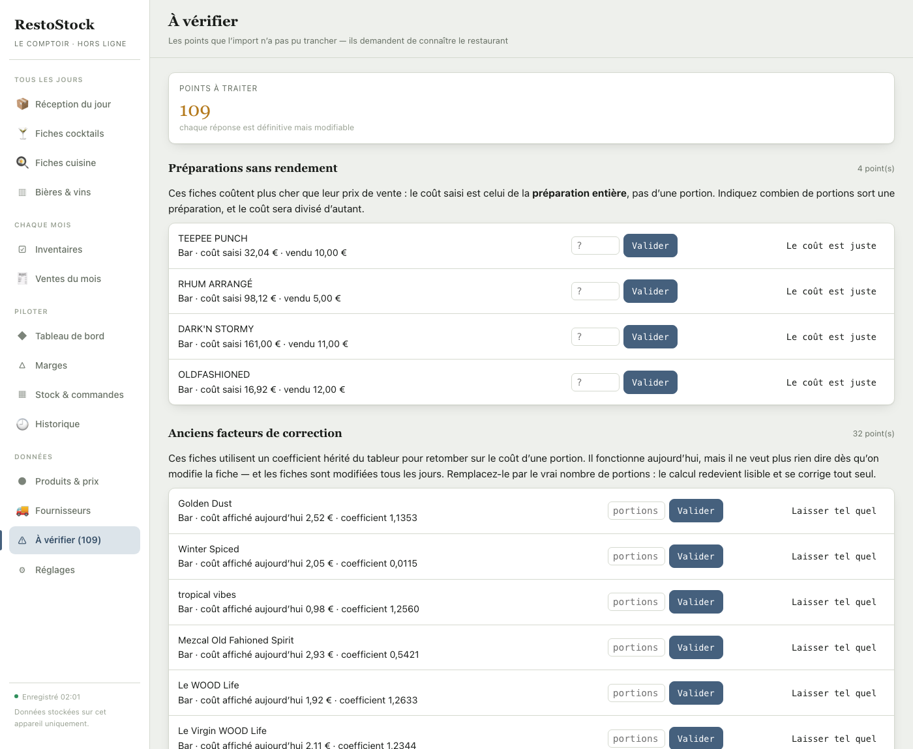

Vous saisissez vos livraisons et vos inventaires. RestoStock calcule le coût de chaque fiche, suit le stock, et vous montre en fin de mois où l’argent est parti.
Pour les bars et les restaurants. Rien à installer.

Vous notez déjà ce qui arrive et ce qui reste. C’est la suite que RestoStock prend en charge.
Si le beurre augmente, les vingt fiches qui en contiennent se recalculent à l’instant. Plus de tableur à reprendre.
Le fournisseur, la quantité, le prix. La liste se réduit à ce qu’il vous livre d’habitude, les plus fréquents en premier.
Dès qu’un prix est saisi, l’appli vous dit où vous vous situez — c’est le moment où vous pouvez encore décrocher le téléphone.

Les ingrédients, les quantités, et le food cost en évidence avec son verdict. À imprimer pour l’afficher au poste — sans les coûts, qui n’ont rien à faire en cuisine.

Une virgule oubliée repérée le jour même coûte dix secondes. Découverte à l’inventaire, elle coûte un mois de chiffres faux.
L’appli connaît vos quantités habituelles et signale ce qui sort de l’ordinaire.

Les droits sont appliqués par la base de données, pas par l’écran : ce qu’un rôle n’a pas le droit de voir ne lui est jamais envoyé.
| Responsable | Chef | Équipier | |
|---|---|---|---|
| Saisir les livraisons, compter les stocks | oui | oui | oui |
| Consulter les fiches techniques | oui | oui | oui |
| Voir les prix, les marges, le food cost | oui | oui | non |
| Modifier les fiches, valider un inventaire | oui | oui | non |
| Réglages et gestion de l’équipe | oui | non | non |
Créez votre établissement, saisissez la prochaine commande qui arrive, et regardez vos fiches se mettre à jour.
Ouvrir l’application